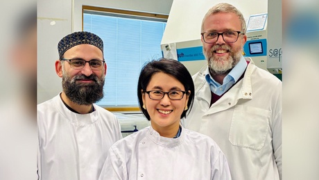
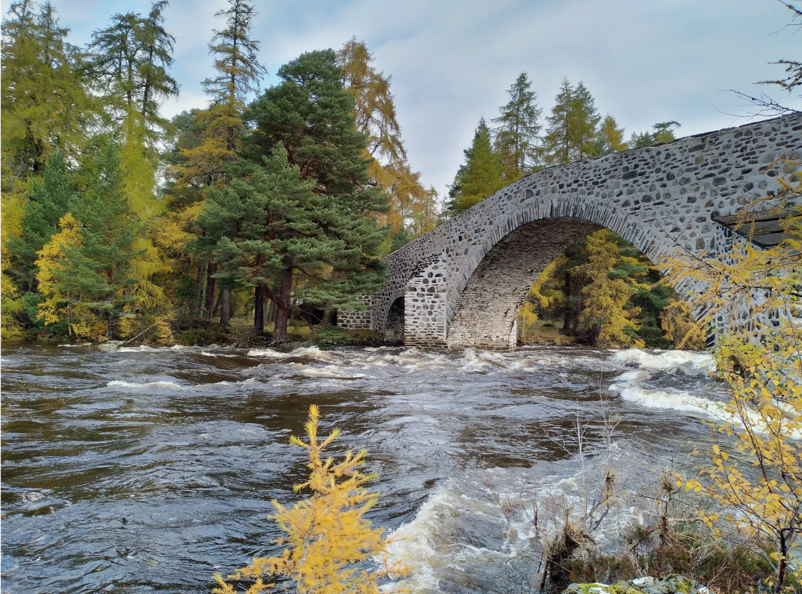

인간 뇌 발달과 신경줄기세포
피질과 해마의 발달 과정에서 신경줄기세포가 어떻게 조절되고, 다양한 신경세포를 만들며, 조직 구조를 형성하는지 연구합니다.
연구 주제 보기University of Aberdeen · Scotland
인간 뇌 발달과 질환을 인간 기반 3D 모델로 연구합니다.
저희 연구실은 신경줄기세포가 인간의 뇌를 어떻게 형성하는지, 그리고 염증·노화·유전적 요인이 이 과정과 뇌 질환에 어떤 영향을 미치는지를 연구합니다. 인간 뇌 조직, 뇌 오가노이드, cerebroid 및 assembloid를 이용해 피질과 해마 발달부터 알츠하이머병까지 이어지는 생물학적 기전을 탐구합니다.
Featured research · 2026
Modeling maternal immune activation in 3D ex vivo human fetal brain cerebroids reveals IL-17A-driven disruption of cortical development
3D ex vivo 인간 태아 뇌 cerebroid 모델을 이용해 모체 면역 활성화와 관련된 IL-17A 신호가 신경줄기세포와 초기 피질 발달을 어떻게 변화시키는지 규명했습니다. 인간 뇌 발달을 직접 반영하는 모델에서 면역 신호와 신경발달의 연결을 분석한 연구입니다.
Eunchai Kang과 Daniel A. Berg는 이 논문의 공동 교신저자입니다.

Research
Kang/Berg Lab은 스코틀랜드 University of Aberdeen의 Institute of Medical Sciences에 있습니다. 인간 기반 실험 모델에 고해상도 이미징, 단일세포 전사체 분석 및 공간 RNA 분석을 결합해 뇌 발달과 질환을 연구합니다.
피질과 해마의 발달 과정에서 신경줄기세포가 어떻게 조절되고, 다양한 신경세포를 만들며, 조직 구조를 형성하는지 연구합니다.
연구 주제 보기인간 줄기세포 기반 뇌 오가노이드와 assembloid를 개발하고, 미세아교세포(microglia), 혈관계 및 다른 세포 유형을 포함하는 복합 모델을 구축합니다.
연구 주제 보기모체 염증과 IL-17A 같은 면역 신호가 인간 신경줄기세포와 초기 뇌 발달을 어떻게 변화시키는지 연구합니다.
연구 주제 보기APOE와 미세아교세포 기능, 세포 노화(senescence), 맥락얼기(choroid plexus) 및 뇌 장벽을 포함해 노화와 신경퇴행성 질환에서 세포 간 상호작용을 연구합니다.
연구 주제 보기Group leader
Eunchai Kang (강은채)은 인간 뇌 발달과 신경퇴행을 연구하는 발달신경과학자입니다. 인간 줄기세포 유래 오가노이드와 assembloid, ex vivo 인간 태아 뇌 모델을 이용해 신경줄기세포, 피질 신경발생, 염증 반응 및 신경세포와 비신경세포 사이의 상호작용을 연구합니다.
최근 연구는 모체 염증과 IL-17A 신호부터 APOE 의존적 미세아교세포 기능, 알츠하이머병, 세포 노화, 맥락얼기와 같은 뇌 경계 구조까지 확장되고 있습니다.
학문적 배경
Eunchai는 한국 KAIST에서 학부 과정을 마친 뒤 Johns Hopkins University에서 박사학위를 받고 University of Pennsylvania에서 박사후 연구를 수행했습니다.
Selected research
Assir et al. Modeling maternal immune activation in 3D ex vivo human fetal brain cerebroids reveals IL-17A-driven disruption of cortical development. Nature Neuroscience, 2026. 논문 보기
Gim et al. Deciphering Cell-Type and Temporal-Specific Matrisome Expression Signatures in Human Cortical Development and Neurodevelopmental Disorders via scRNA-Seq Meta-Analysis. Nature Communications, 2025. 논문 보기
Qian et al. Brain-region-specific organoids using mini-bioreactors for modeling ZIKV exposure. Cell, 2016. 논문 보기
Aberdeen · Scotland
Kang/Berg Lab은 스코틀랜드 북동부의 University of Aberdeen에 있습니다. 아래는 애버딘의 풍경입니다.

Aberdeen, Scotland
Alumni perspective
Kang/Berg Lab의 전 연구원 Do Hyeon은 Aberdeen에서 박사과정 동안 CRISPR-Cas9 유전자 조작과 cortical organoid를 이용해 인간 피질 확장과 신경발달질환을 연구했습니다.
이 영상은 박사과정 당시의 연구, 새로운 모델 시스템을 익힌 경험, 국제학생으로서의 연구 생활과 학생 지도 경험을 소개합니다. Do Hyeon은 현재 Oxford에서 박사후 연구원으로 연구를 이어가고 있습니다.
Kang/Berg Lab
Institute of Medical Sciences
University of Aberdeen
Aberdeen, Scotland, United Kingdom
Eunchai.Kang(at)abdn.ac.uk
Daniel.Berg(at)abdn.ac.uk